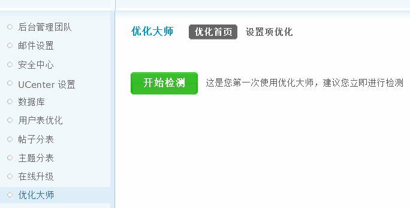
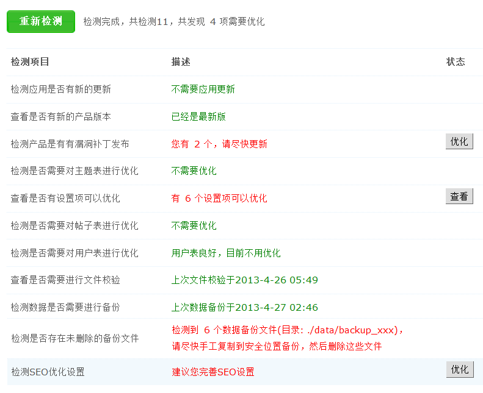
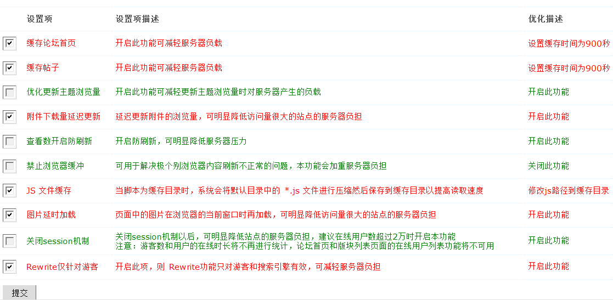

优化大师
网站运营一段时间后，可能会由于资源消耗等原因导致运行速度慢，用户体验差的情况出现，此时将网站优化好，对于不懂技术的站长无疑是个挑战，所以在 Discuz! X3中，添加了Discuz!优化大师， 帮助站长检测站点的有关设置，寻找可优化点。
操作路径：【后台管理】->【站长】->【优化大师】
一、优化大师首页
点击开始检测，系统将会从数据表、系统提醒、后台设置项中共计十一项内容进行检测，若有需要优化的内容，将会以红色字体显示，并显示需要优化的状态，若此项不需要优化将以绿色字体显示，如下图：
如有需优化项，点击优化，即可跳转到相应的页面，设置即可。
二、设置优化项
设置优化项主要是检测服务器负载方面的设置，需要优化的项目以红色字体标识并默认在复选框选中；绿色字体项是不需要优化的项目，默认不选中。
根据自己站点的情况，选中或是取消各优化项，提交后即可自动完成选中项的优化。